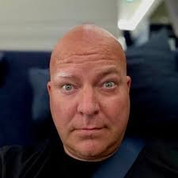
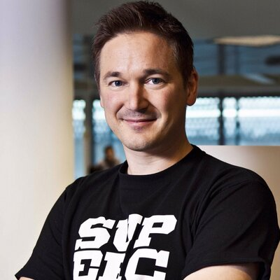
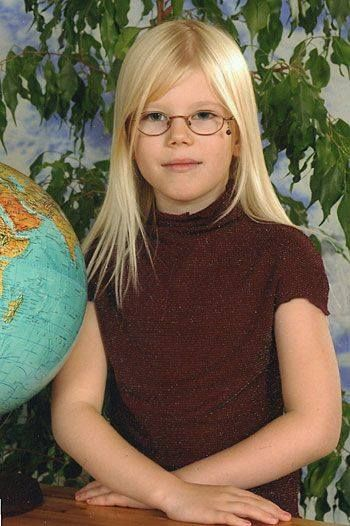
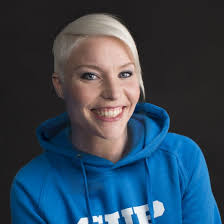

Criadores do Jogo
O Brawl Stars foi criado pela empresa Supercell, uma desenvolvedora de jogos eletrónicos sediada em Helsínquia, na Finlândia. A Supercell é conhecida por desenvolver jogos mobile de grande sucesso a nível mundial, destacando-se pela sua abordagem inovadora e foco na qualidade da experiência do jogador.
A empresa foi fundada em 2010 por Ilkka Paananen e rapidamente ganhou notoriedade com jogos como Clash of Clans e Clash Royale. O desenvolvimento de Brawl Stars começou alguns anos mais tarde, com o objetivo de criar um jogo multijogador mais rápido e acessível, adaptado a sessões curtas em dispositivos móveis.
Uma das características que distingue a Supercell é a sua forma de trabalhar: a empresa organiza-se em pequenas equipas independentes, chamadas “células”, onde cada grupo tem liberdade para desenvolver e testar ideias. Isso permite criar jogos mais inovadores e adaptados ao gosto dos jogadores. Durante o desenvolvimento de Brawl Stars, o jogo passou por várias mudanças e testes antes de ser lançado globalmente em 2018.
Além disso, a Supercell mantém uma relação próxima com a comunidade, ouvindo o feedback dos jogadores para melhorar constantemente o jogo. As atualizações frequentes, com novos personagens, modos de jogo e eventos, mostram o compromisso da empresa em manter Brawl Stars atual e interessante ao longo do tempo.
Assim, os criadores de Brawl Stars destacam-se não só pelo sucesso do jogo, mas também pela sua forma de inovar e de colocar os jogadores no centro do desenvolvimento.
Além do Frank Keienburg (líder do jogo) e do CEO Ilkka Paananen, há várias outras pessoas importantes da equipa da Supercell que estiveram envolvidas no desenvolvimento do Brawl Stars. 👨💻 Outras pessoas relevantes Ryan Lighton – designer que ajudou na criação de mecânicas e ideias do jogo Dani Moreno (conhecido como “Dani”) – responsável pela comunicação com a comunidade e novidades do jogo Paula Aho – também trabalhou na comunicação e apoio aos jogadores Marika Appel – envolvida na parte de marketing e divulgação
Galeria




